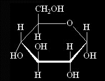

This was you then...

But now...
After undergoing numerous transformations, the molecule of glucose that you were has been changed into ATP. In fact, one molecule of glucose turns into 36 molecules of ATP.
The whole process took some effort from the cells, while you were broken down into numerous other compounds. So technically, you cease to exist.
The thing is, though - this all can be reversed. Photosynthesis is similar in the sense that it builds up glucose from other chemicals, so there's still a hope that you can be brought together again.
Someday, you will feel whole again.
Cellular Respiration - by Dylan Dalida
A Project for Bio1
Sources:
-
info:
- http://www.biology-pages.info/C/CellularRespiration.html
- https://www.biology.iupui.edu/biocourses/N100/2k4ch7respirationnotes.html
- https://www.youtube.com/watch?v=7J4LXs-oDCU
- sugar.png: https://minecraft.gamepedia.com/Sugar
- glucose.png: https://www.cleanpng.com/free/anomer.html